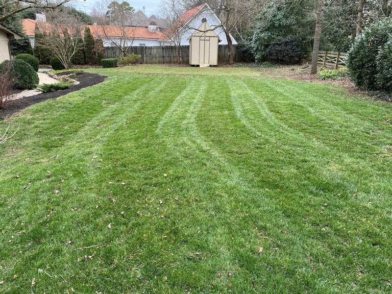

Landscape Design Services In Knoxville, TN
One of the great joys of owning a home is landscaping and creating a beautiful yard to complement your house. However, landscaping is arduous, and you often cannot do it all on your own. Planting a few bushes and trees might be simple enough, but leveling your yard or digging new drainage is tough.
That’s where The Yard Force comes in. True to our name, we are an unstoppable force for any yard work you need. Our landscape design services can serve both large and small projects, so give us a call today to discuss what you have in mind!

Landscape Design Projects
Stacked stone, trimmed shrubs, fresh mulch and layered plantings — landscapes that tell a story.

 BeforeAfter
BeforeAfterWhy Work With The Yard Force for Landscape Design Services
The Yard Force has built itself up from humble beginnings to become one of the premier landscaping contractors in the Knoxville area. Our commitment to excellence and customer service has distinguished us from the competition, and our tireless devotion to our work has created many satisfied customers.
Whether you are starting completely from scratch or want to update your current landscaping, we can draw up a design for you and execute it from start to finish. Our landscape designs will take into account all important features, such as utility placements, drainage, and hardscape installation.
Our process is simple. Give us a call to discuss your project, and we will create a custom-tailored plan with an estimate. If you agree, we can get started on our work ASAP!
Benefits of Landscape Design Services
Below are just a handful of the benefits of scheduling landscaping services from The Yard Force.
Professional Designs
We have years of experience serving homeowners in Knoxville and understand their needs and wants. We can provide a completely unique, professional landscape design that accounts for your preferences and constraints.
Save Time and Money
Not only do we professionals know how to safely remove large landscaping elements like trees and stumps, but we can also guarantee to get the job done correctly the first time. DIY projects run the risk of creating more problems, which will cost you more time and money to fix down the road.
Regular Landscape Maintenance
Regular landscaping maintenance can remove harmful elements to maintain a healthy soil composition and allow sustainable gardens to flourish.
How Landscape Design Services Can Improve Your Property
Landscaping design services can improve your property by enhancing its aesthetics and opening it up for future development. Redoing your landscaping can give your house more curb appeal, which can help you sell it faster when it’s on the market. Landscaping is one of the first things potential buyers see, so good landscaping can create an excellent first impression and make the sale more likely.
Additionally, clearing and leveling land opens it up for development. Clearing underbrush and vegetation allows you to install basic infrastructure like water or gas utilities. Developed land typically sells for much higher prices than raw land, so landscaping can increase your profit margins if you plan to sell.

Work With Us
Our process is simple. Just contact us to get started.
From there we will provide you with a free consultation and quote. Before long the job is done!
Tell Us About Your Project
Get a Custom Tailored Execution Plan and Estimate
Sit Back and Relax While We Transform Your Land
What Our Landscape Design Clients Say
A New-Build Backyard Transformation
“The work crew were fabulous. … Budget and flexibility was huge. … We're very happy with the project.”
Caitlin · Bluegrass / Ebenezer, Knoxville
★★★★★Professional, Timely, Honest
“Can't say enough great things about Yard Force! Professional, timely, honest, cost-effective, and knowledgeable. I've used them for planting new grass in a large yard, and planting a large mature tree, along with other regular services.”
Scott Cruze · November 2023★★★★★A Yard Brought Back to Life
“Clay and his crew did an amazing job in bringing our yard back to life after many years of neglect. Clay was thoughtful, creative, true to his word, and a pleasure to work with. His team was hard working and dedicated to doing a first-rate job. We highly recommend them for your landscaping projects!”
Satisfied Client ★★★★★
★★★★★A Back Yard We Now Enjoy
“Clay and his team were excellent. They did a great job and completely changed our back yard into a place we now enjoy. Highly recommend.”
Sharon Sullivan · January 2023Topsoil Leveled and Fresh Sod
“Had the Yard Force come out and level with some topsoil and apply some sod. They did a fantastic job and will definitely use them in the future.”
Ryan Bucci · May 2023Frequently Asked Questions About Landscape Design Services
Below are some of the most common questions the team at The Yard Force receives about our landscape design services.
What Does a Landscaping Design Include?
Landscaping design includes planning and creating both hardscape and softscape elements. Hardscaping elements include things like patio and pavement — any non-living, non-organic yard features. Softscape elements, in contrast, include plant selection, vegetation, and land grading/slope.
What Are the Core Elements of Landscaping Design?
The five core elements of landscaping design are form, texture, scale, color, and line. Strategic use of these elements is how you make beautiful landscaping designs that are appealing to the eye.
How Much Does Landscaping Design Cost?
Pruning typically ranges from $250 to $750 per job. Mulch ranges from $500 to $1,500 per job depending on the quantity needed. Sod installation starts at $780 per 500 sq ft. Full installation depends on the scope and scale of the project but can be $500 to $50,000 or more.
These are wide, ballpark ranges, not a quote. Multiple factors affect the final price, including density, terrain and grade, access points to the site, the scope of work, materials and location. For an in-depth quote, it’s best for us to come out and see the property in person, so we can make sure you’re not being overcharged.
Landscaping Services in Knoxville
Your landscaping deserves the best, so don’t settle for a subpar contractor. Contact The Yard Force online or give us a call today at (865) 290-8815 to schedule a free quote for landscape design services!
Request a Landscape Design Quote
Tell us about your property and project. This request goes straight to our landscape design team, and we'll follow up to schedule a free on-site visit.
Landscape Design Quote Request
Thank you!
We received your request and will be in touch shortly with your free quote. Need us sooner? Call (865) 290-8815.